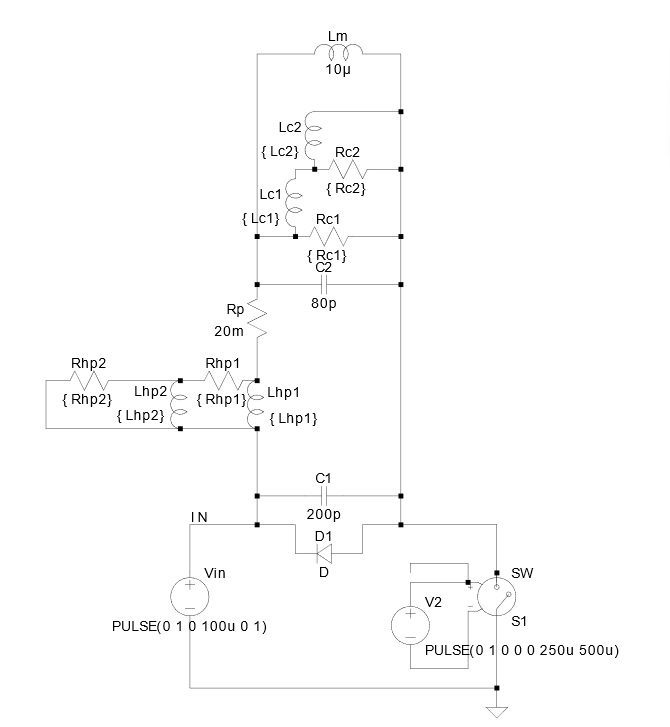
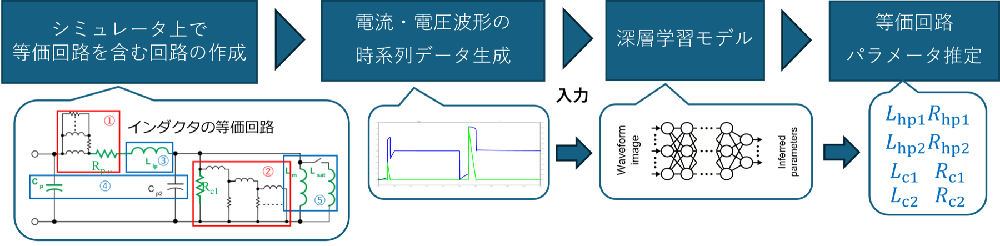

電気回路 × AI
インダクタのデータ駆動モデリング
Data-Driven Modeling of Inductors
担当：川﨑 はな
回路シミュレーションで作った波形から AI でインダクタの等価回路のパラメータを推定し，回路パラメータ推定の精度向上を目指す
キーワード：
機械学習／InceptionTime／SPICE／電気回路／回路モデリング
はじめに
パワーエレクトロニクスは，電気の電圧や電流を，機器に合った形に変換・制御する技術です．スマートフォンの充電器から電気自動車まで，身の回りの多くの機器に使われています．こうした回路を設計するには，部品のふるまいを正しく表す回路モデルが必要です．
しかし，実際の回路を作る前の開発の段階（開発前工程）では，多くの時間と労力がかかっています．もし AI で回路パラメータを推定できれば，こうした時間と労力のコストを減らせると期待されます．
時系列データからの推定：回路パラメータ推定
本研究では，電流の変化をさまたげる性質をもつ部品であるインダクタ（コイル）を扱います．実際のインダクタは，理想的なコイルとは異なるふるまいをします．そのため，抵抗やコイルなどを組み合わせた回路（等価回路）で表します．この等価回路の各部品の値を，回路パラメータと呼びます．
そこで本研究では，時系列データを用いた回路パラメータ推定に取り組んでいます．時系列データとは，時間とともに変わる電流や電圧の値を，一定の間隔で記録したデータです．AI には電流・電圧の波形を入力し，回路パラメータの値を答えとして出させます．AI のモデルには，時系列データを扱う深層学習モデル InceptionTime を用います．

研究内容
本研究では，回路パラメータ推定の精度向上を目的としています．本研究は，大きく2つの段階で行います．
- 波形の生成：電子回路の動きをコンピュータ上で計算するシミュレータ（SPICE）で，インダクタの等価回路を含む回路を作ります．そして，電流や電圧が時間とともに変わるようすを計算する過渡解析を行い，波形を作ります．
- 回路パラメータの推定：波形の時系列データを AI に入力し，等価回路の回路パラメータを推定します．

参考文献
- T. Motomatsu et al., IEEE Trans. Magn., vol. 59, no. 11, 2023.
- 元松 武大 他，電気・情報関係学会九州支部連合大会，04-2A-07，2024．
- 元松 武大，修士学位論文，鹿児島大学，2024．
- R. Ridley, IS09.1, APEC, Mar. 2016.
- H. Ismail Fawaz, arXiv: 1909.04939, 2019.